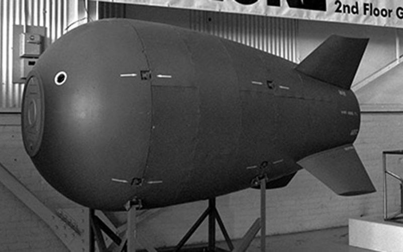
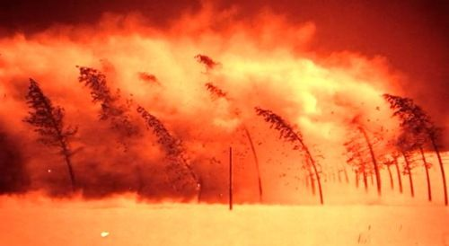

|

|
Veinticuatro años antes, los científicos y funcionarios del gobierno de EE.UU. llegaron a otro punto de inflexión que implicaba un riesgo pequeño pero potencialmente desastroso.
Antes de la primera prueba de armas atómicas en 1945, los científicos del Proyecto Manhattan realizaron cálculos que apuntaban a una posibilidad escalofriante.En un escenario que plantearon, el calor de la explosión de fisión sería tan grande que hubiera podido desencadenar una fusión descontrolada.
En otras palabras, la prueba podría haber incendiadoaccidentalmente la atmósfera y quemar los océanos, destruyendo la mayor parte de la vida en la Tierra.
Estudios posteriores sugirieron que probablemente eso era imposible, pero hasta el día de la prueba los científicos verificaron una y otra vez su análisis.
Finalmente llegó el día de la prueba Trinity y los funcionarios decidieron seguir adelante.
Hiroshima y Nagasaki: cómo fue el "infierno" en el que murieron decenas de miles por las bombas atómicas
Cuando el destello fue más largo y brillante de lo esperado, al menos un miembro del equipo pensó que había sucedido lo peor.
Uno de ellos fue el presidente de la Universidad de Harvard, cuyo asombro inicial se convirtió rápidamente en miedo.
"No sólo no tenía confianza en que la bomba funcionara, sino que cuando funcionó él creyó que la habían arruinado con consecuencias desastrosas y que estaba presenciando, como él mismo dijo, 'el fin del mundo'", dijo su nieta Jennet Conant al diario The Washington Post después de escribir un libro sobre los científicos del proyecto.Para el filósofo Toby Ord de la Universidad de Oxford, ese momento fue un punto significativo en la historia de la humanidad.
Él menciona la fecha y hora específicas de la prueba Trinity -05:29 del 16 de julio de 1945- como el comienzo de una nueva era para la humanidad, marcada por un cambio radical en nuestras habilidades para destruirnos a nosotros mismos.
"De repente, estábamos liberando tanta energía que estábamos creando temperaturas sin precedentes en toda la historia de la Tierra", escribe Ord en su libro The Precipice ("El precipicio").
A pesar del rigor de los científicos de Manhattan, los cálculos nunca fueron sometidos a la revisión de pares,de una parte desinteresada, señala, y tampoco hubo evidencia de que se informara a ningún representante electo sobre el riesgo y mucho menos a otros gobiernos.
Los científicos y los líderes militares siguieron adelante por su cuenta.
Ord también destaca que, en 1954, los científicos obtuvieron un cálculo asombrosamente incorrecto en otra prueba nuclear: en lugar de una explosión esperada de 6 megatoneladas, obtuvieron 15.
"De los dos cálculos termonucleares principales realizados ese verano... obtuvieron uno correcto y otro incorrecto. Sería un error concluir que el riesgo subjetivo de incendiar la atmósfera era tan alto como un 50%. Pero ciertamente no era un nivel de confiabilidad en el que arriesgar nuestro futuro", dijo.
|

|